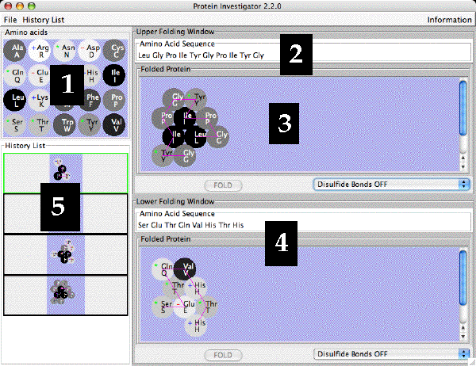

Protein Investigator
- The Protein Investigator Screen
- Entering and Editing Protein Sequences
- Folding Your Proteins
- Using the History List
- Using Game Mode
- Printing Your Structures
- Assumptions, approximations, etc.
(1) The Protein Investigator Screen
The Protein Invesitgator Screen is shown below with key parts numbered.

- The Amino Acid Table. This is a reference for the 20 amino acids
found in proteins. Both the one-letter and three-letter codes for
each amino acid are shown.
- The shades of the amino acids indicate
their relative hydrophobicities: the shades blend from
white (hydrophilic) through gray (intermediate)
to black (hydrophobic).
- Amino acids with positively-charged side chains have
a + in their symbol.
- Amino acids with negatively-charged side chains have
a - in their symbol.
- Amino acids whose side chains can make hydrogen bonds
have a * in their symbol.
- Upper Folding Window: Amino acid Sequence Box. Enter the amino acid
sequence you want to fold here. See under Entering
for instructions on how to enter and edit sequences. See under
Folding for how to fold sequences.
- Upper Folding Window: Folded Protein Pane. The structure of the folded
protein will appear here.
- Lower Folding Window. You can enter and fold another protein in
this window. You can then compare the two protein sequences and
structures.
- History List. Each time you fold a protein, it is saved in the
History List. Sequences in the history list can be loaded into either
folding window for further analysis.
(2) Entering and Editing Protein Sequences
You can enter a protein sequence by clicking in the Amino Acid Sequence Box and
typing the single letter code for the desired amino acids. The program
will automatically fill in the three-letter code for easier reading.
You can edit the amino acid sequence as you would any line of text: you can
click on a place to insert an amino acid (type the single-letter code); you
can select amino acids and delete them with the delete or backspace key
(the program will automatically delete complete amino acids).
Note that once you change the amino acid sequence, the border of the Folded
Protein Pane changes to pink - this indicates that the amino acid sequence
in the Sequence Box no longer matches that of the Folded Protein. The "Fold"
button is then activated so you can fold your new protein.
(3) Folding Your Proteins
To fold your protein, click on the "Fold" button in the appropriate Folding
Window. In a few seconds, depending on the length of your protein and the
speed of your computer, the folded protein will appear in the Folded Protein
pane. The border of the Folded Protein Pane will then turn gray to indicate
that your protein is folded and the "Fold" button will be deactivated until
you change the Amino acid sequence. The backbone of your protein will be shown
in magenta.
By selecting either "Disulfide Bonds On" or
"Disulfide Bonds Off", you can fold the protein under conditions
where disulfide bonds can form (oxidizing - typically outside of a cell) or not
(reducing - typically inside a cell), respectively. When enabled, disulfide bonds
can form between pairs of cysteines; they are stronger than ionic bonds and are shown
by yellow lines.
(4) Using the History List
The History List shows all the proteins you have folded during this session.
All proteins are lost once you quit the program.
You can move a folded protein from the History List to one of the
Folding Windows by double-clicking on the desired protein in the History List; its
border will change to green indicating that it has been selected. Then
choose either the "Send to Upper Panel" or "Send to Lower Panel" items
from the menu that pops up to load that protein into
the upper or lower folding window, respectively. You can then compare the
two proteins in the different folding windows as well as edit and re-fold
either sequence. You can also add a note to the item in the history list
that will appear when you leave the cursor over the item for a few seconds.
If you leave the cursor over a protein in the History List, a small window
will pop up that shows that protein's amino acid sequence and/or any notes
you have added.
You can save the proteins in your History List to a file by choosing
"Save As..." from the "File" menu. Once you have designated a file
to save into, choosing "Save" from the "History List" menu will automatically
save to that file. History List files must end with the extension
.histlist; the program will add it if you don't.
You can load in a History List that you have saved in a .histlist file
by choosing "Load" from the "History List" menu and selecting the desired
.histlist file. The current History List will be replaced by the one
in the file.
You can delete an protein from the History List by clicking on the protein
in the History List that you want to delete and choosing "Delete Selected"
from the "History List" menu. This action cannot be un-done.
You can clear the History List by selecting "Clear" from the "History
List" menu. This action cannot be un-done.
You can save all the proteins in the History List as a web page by selecting
"Save as Web Page..." from the "History List" menu. You will be
asked to supply the name of a folder in which all the relevant files
will be stored. You can view the web page by double-clicking the file
named "index.html" in the directory you have named. The web page
cannot be loaded into Protein Investigator; only a .histlist file can
do this.
(5) Using Game Mode
In Game Mode, the object is to design a protein with the same shape
as a target molecule you have chosen. Protein Investigator will then determine
if the shape of your protein matches the target. Using Game Mode is a good
way to practice your protein engineering skills.
In Game Mode, there are two levels of shape matching which can be selected
by choosing the Strict Matching Mode from the Game menu:
- Strict Mode although the amino acid sequences of your protein
need not match that of the target, both the shape of the protein and the direction
of the backbone must be the same as the target. Also, the folded protein must be
in the same orientation as the target on order to register a match.
This is a much more challenging level of play than Non Strict Mode.
- Non-strict Mode matches your protein based on shape only and will try
matching your protein with the target rotated into different orientations.
You can switch between these two modes by choosing the Strict Matching Mode
from the Game menu; in Strict Mode, a check will appear to the left of the
Strict Matching Mode in the menu.
You use game mode as follows:
- Choose Choose a Target Shape... from the Game menu.
- Double-click on one of the target shapes in the list that appears.
- A window will pop up showing the target shape you chose. In Strict Mode
the backbone will be shown and the amino acids will be numbered to show the
proper direction of the protein chain. In Non Strict Mode, only the
shape of the target protein will be shown. In either case, no specific amino acids
will be shown since your task is to match the shape of the target,
not necessarily the sequence.
- Go back to one of the Folding Windows and design a protein to match
the shape of the target you have chosen.
- To see if your shape is a match to the target, click the Check Upper/Lower
Protein for Matching Shape button as appropriate. A window will pop up
telling you if you were successful or not.
- When you are done with this target, click the Cancel button.
(6) Printing Your Structures
You can print the amino acid sequences and folded structures of the
proteins in both Folding Windows by choosing "Print" from the "File"
menu.
(7) Assumptions, approximations, etc.
This is a highly-simplified model of protein folding. It is not
intended to predict the correct structures of any proteins; it is designed
to illustrate the major principles involved in that process. Our model of
protein folding includes the following factors:
- The hydrophobic effect: Proteins are folded so as to minimize
the number of hydrophobic amino acids exposed to the water surrounding
the protein. Different amino acids have different hydrophobicities that
span a wide range of values. This is the weakest force controlling the
shape of the proteins.
- Hydrogen Bonds: Proteins are folded so as to maximize contacts
between amino acids that can form hydrogen bonds. Amino acids are
either able to make hydrogen bonds or not; there are no intermediate
levels of hydrogen bonding ability. Hydrogen bonds have an intermediate
strength between the other two interactions.
- Ionic Bonds: Proteins are folded so as to maximize contacts
between side chains with unlike charges and to minimize contacts
between side chains with like charges. Amino acids are (+), (-),
or neutral; no intermediate levels of charge are allowed. Ionic
bonds are the strongest of the interactions.
Even though these provide some important insights into protein folding,
you should always keep in mind that this is an approximation. The most
important "gotcha's" to be aware of are:
- This program folds proteins in 2-dimensions only; real proteins
fold in 3-dimensions.
- This program treats all amino acids as equal-sized circles; real
amino acids have different sizes and shapes.
- This program folds the protein strictly based on the interactions
between the side chains; in real proteins, side chains can interact
with the backbone and proteins are often folded with the help
of chaperones.
- This program does not model secondary or quaternary structure;
real proteins often have these.
- This program assumes that all side chains with hydrogen bonding
capability can bond with each other; in real proteins this is
not always possible.